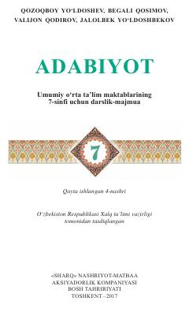

A77-sinf o‘quvchilari uchun mo‘ljallangan adabiyot darslik-majmuasi.
Mazkur darslik-majmua umumiy o‘rta ta’lim maktablarining 7-sinf o‘quvchilari uchun mo‘ljallangan bo‘lib, badiiy so‘z qudrati, mumtoz va zamonaviy adabiyot namunalari haqida ma’lumot beradi. Kitob o‘quvchilarning estetik didini, tafakkuri va ma’naviy olamini boyitishga xizmat qiladi.